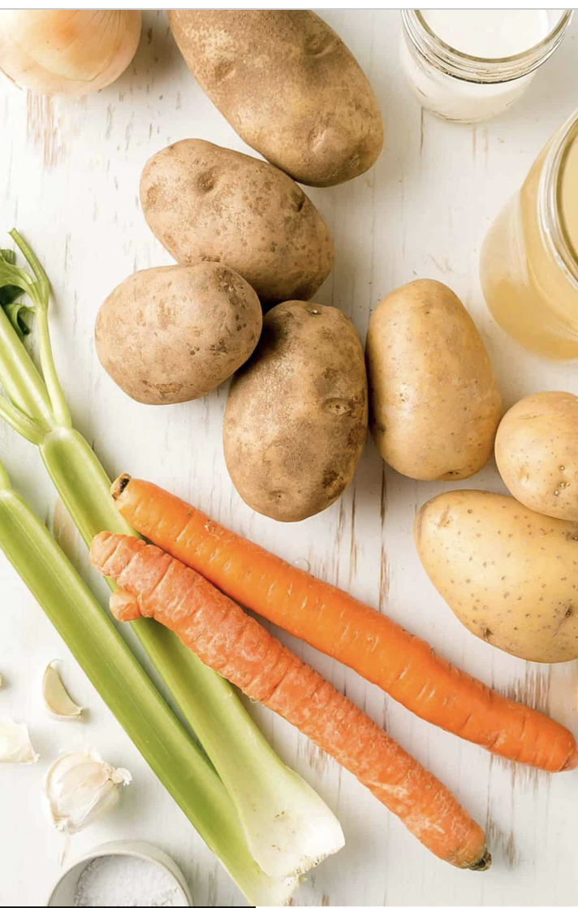
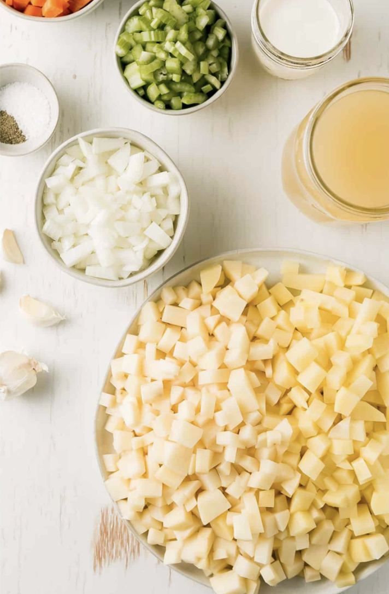
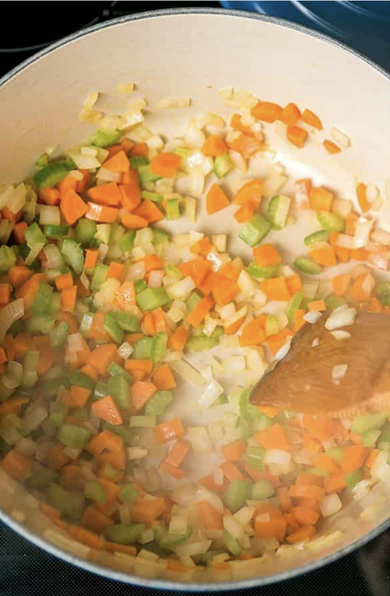
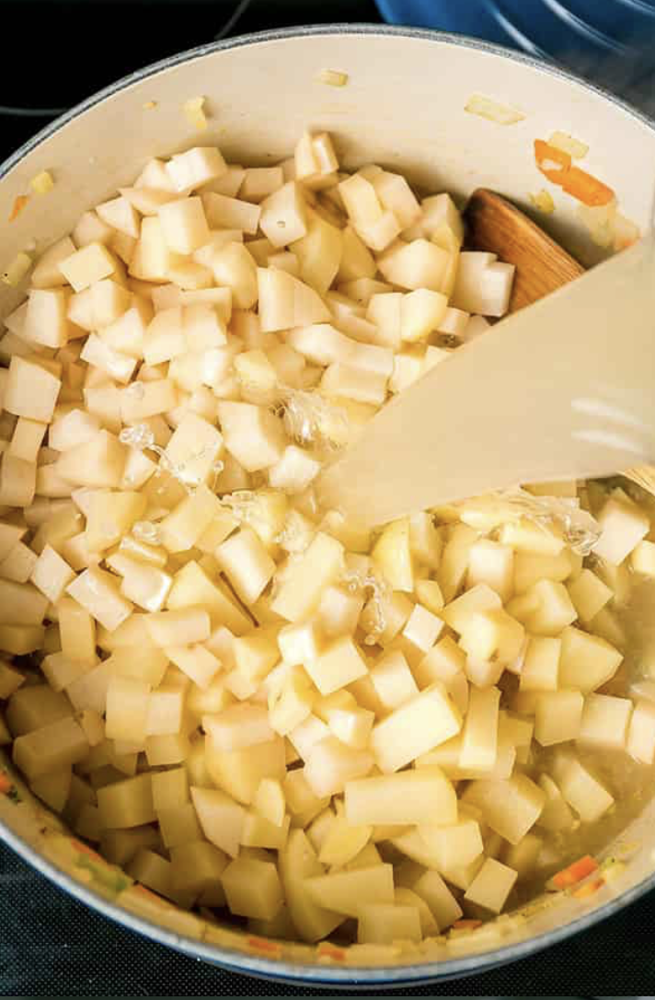
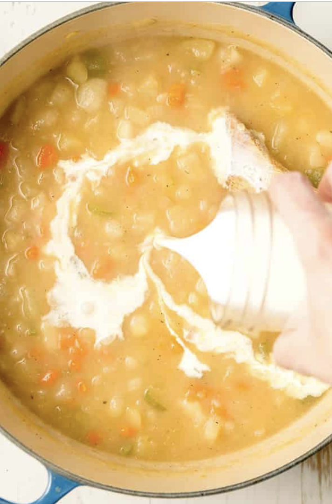
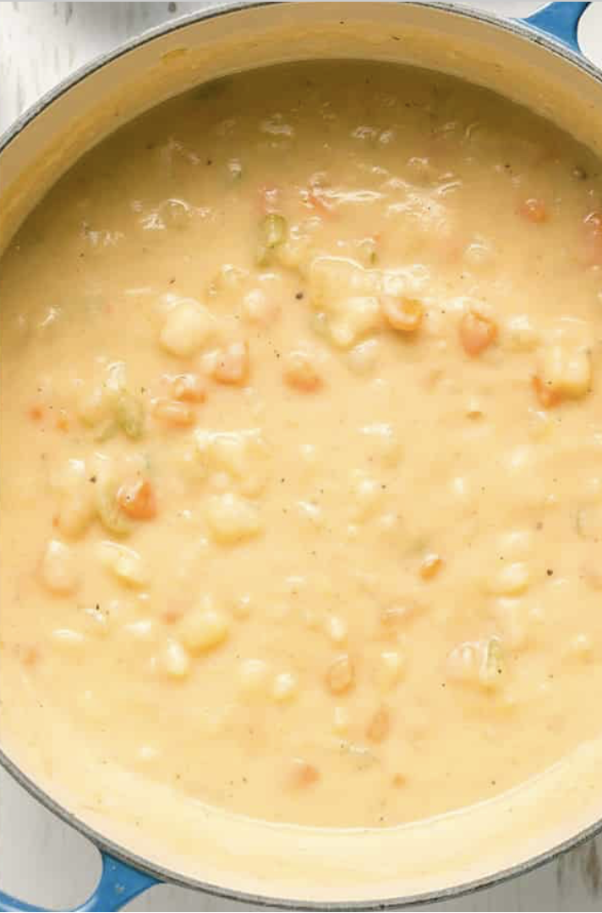

| # | Ingredient name | Amount |
|---|---|---|
| 1 | Oil | 2 table spoons |
| 2 | Celery | 2 |
| 3 | Carrot | 2 |
| 4 | Garlic | 3 cloves |
| 5 | Medium potatoes | 8 |
| 6 | Checken legs / breast | 2 / 1 |
| 7 | Heavy cream | 0.25 - 0.5 cup |
| 8 | Species | to taste |
Prepare the ingredients. Wash them under the water.
Dice onions, celery, carrots and potatoes.
Heat oil in a pot. Add onion, celery and carrots, add some salt and pepper. Fry vegetables till they become soft for about 5 minutes. Then add minced garlic and leave for half a minute.
Add diced potatoes into the pan with vegetables and add another pinch of salt salt. Pour chicken broth. Chicken broth can be prepared like this: add into the boiling water 2 chicken legs or a breast. Boil for 40 minutes, remove leggs or breast.
Cover and simmer until the potatoes are tender, it will take around 25-30 minutes. Gently mash some of the potatoes to thicken the soup. Remove from heat and stir in the cream.
You can serve it with cheese, bacon or green onion.
